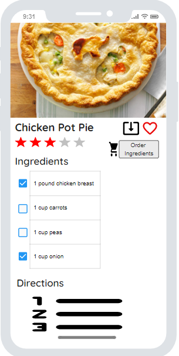

The year 2020 has seen restaurants, gathering spaces, sporting events, and more close down indefinitely due to the ongoing COVID-19 pandemic. This has caused people to flock to grocery stores in efforts to secure ingredients to keep their families fed. Many people would like to cook, but don’t know how. Some have ingredients, but have no idea how to make them into a satisfying meal. Still others may be uncomfortable going out to get groceries amidst the pandemic and more comfortable ordering their meals over the internet. Our product “Chef It!” seeks to resolve these problems and more by providing a platform for experts and newbies alike to share recipes complete with ingredient lists, helpful instructions, ratings, and reviews. Chef It! also allows users to stream video tutorials to assist beginner cooks.
For this product, the customer will be our users. Our platform will not target any one group of people, but instead appeal to all ages, cultural backgrounds, and geographies. The benefit we see to choosing this method is that we will invite the widest array of cuisine if we can attract the most diverse user-base. The key to making this diversity target feasible is to make the application simple to navigate and provide a user experience that brings users back for more.
Alex is a 20 year old student who lives on a college campus. Alex has, up until this point, has been going to the school cafeteria and restaurants to eat. Unfortunately, due to COVID19, Alex would like to prepare his own food to reduce the risk of contracting the pandemic. Alex would like to learn beginner friendly recipes and keep a list of favorite recipes he liked. Finally. Alex would like to rate the recipe that he cooked.
Laura is a 38 year old mother with two children. She would often prepare meals for her children by looking up recipes and buying ingredients at the grocery store. Due to the pandemic, Laura would like to reduce the amount of time at the grocery store, use a recipe app to look for meals that can feed a family, use a recipe app to order ingredients she is missing from a recipe, and read user feedback on the recipes.
To get started with our design, we are tasked with generating a requirements list of desired behaviors and critical non-functional requirements. From the rough outline of features in the preceding section, we are able to generate a functional requirements list shown below in Table B-1:
| Identifier | Requirement/Description |
|---|---|
| FR-1 | Application must allow users to generate unique user profiles |
| FR-2 | Application must retain recipes within the datastores |
| FR-3 | Application must call recipes and present to the user when requested |
| FR-4 | Application must allow filtering of recipes based upon pre-defined criteria |
| FR-5 | Application must store and build internal associations for video recipes |
| FR-6 | Application must allow for and retain user feedback on recipes |
| FR-7 | Application must allow for each recipe to be user rated and retain that rating |
| FR-8 | Application must be available for iOS (API 13+) and Android (API 23+) |
| FR-9 | Application must implement a service that allows for in-app payment |
| FR-10 | Application must implement location services microservice for grocer locating |
| FR-11 | Application must implement a shopping cart microservice that links to local grocers |
| FR-12 | Application must allow users to search recipes for keywords |
| FR-13 | Application must be accessible by commonly used internet browsers |
Table B-1. Functional requirements for the Chef It! application.
While these features define the basic behavior of the application, they do not paint the entire picture of the system. The non-functional requirements below in Table B-2 will define the targeted user experience of the application.
| Identifier | Requirement/Description |
|---|---|
| NFR-1 | Application must retain user information in a secure fashion |
| NFR-2 | Application must have high availability (>99.999%) |
| NFR-3 | Application must be able to support a high number of connections |
| NFR-4 | Application must be able to reliably transport customer data |
| NFR-5 | Application must have low latency even under heavy load |
| NFR-6 | Application must be computationally efficient |
| NFR-7 | Application must be easy to navigate for non-tech users |
Table B-2. Non-Functional requirements for the Chef It! application.
These requirements will be referenced by their identifier when necessary to further provide implementation detail.